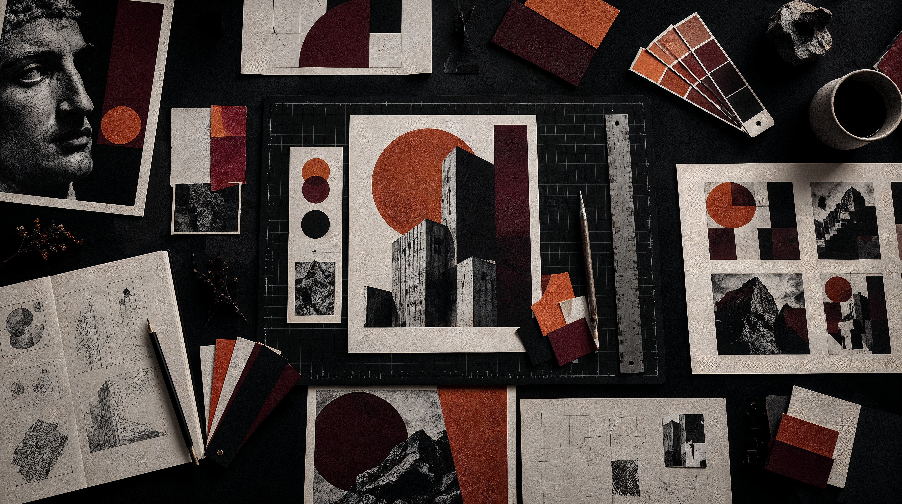

Research
Analisi, riferimenti, contesto e ricerca visiva diventano il punto di partenza.

GRAPHIC DESIGNER / ITALY
SCROLL TO EXPLORE ↓
DESIGN IS NOT
JUST AN image.
IT IS A SYSTEM.
Trasformo concept e idee in sistemi visivi coerenti, costruendo identità capaci di mantenere una direzione grafica riconoscibile attraverso diversi supporti e linguaggi.
Analisi, riferimenti, contesto e ricerca visiva diventano il punto di partenza.
La ricerca viene tradotta in una direzione progettuale chiara e riconoscibile.
Tipografia, colore, immagini e composizione diventano parte dello stesso linguaggio.
Il sistema viene applicato ai diversi supporti mantenendo coerenza e personalità.
Visual Identity, Branding e Art Direction sviluppati attraverso progetti editoriali, commerciali e digitali.
EXPLORE PROJECTS ↗Scopri il mio percorso, il mio approccio alla progettazione e gli strumenti che utilizzo nel mio workflow.
ABOUT ME ↗